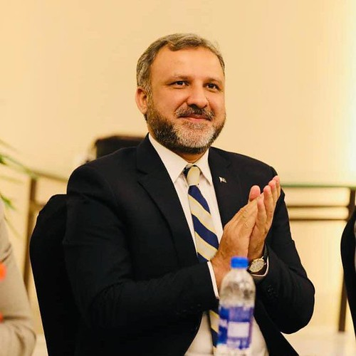

Muazzam A. Khan Khattak
Professor (Tenured)
(Senior Member IEEE)
(Member Pakistan Academy of Sciences)
(Head Huawei Academy, Quaid-i-Azam University, Islamabad)
(Director ICESCO Chair for Big Data Analytics and Edge Computing)
(Member Prime Minister Advisory Committee for Establishment of IT Center of Excellence in Pakistan)
(Senior Member National Computing Education Accreditation Council)
(Member Higher Education Commission, A&A Division for Computing Programs)
(Member Asian Council of Science Editors)
üìß muazzam.khattak-at-qau-edu-pk
☎ +92-51-9064-2210
Dept. of Computer Science,
Quaid-i-Azam University, Islamabad, Pakistan
PhD (Wireless Network)
Course Work: International Islamic University Islamabad
Research Work: University of Missouri KC, USA.
MS: International Islamic University Islamabad.
Google Scholar
Citations: 1955
H-index:
25
Total
Impact Factor: 300+
Research Interests
· Internet of Things, Internet of Vehicles
· Internet of Medical Things
· Information & Network Security
· Multimedia Encryption and Compression
· Block Chain & IOTA
Teaching
PhD/MS/MPhill
· Next Generation Networks
· Selected Topics in Networks
· Network Switching and Routing
· Wireless Ad-hoc & Senor Networks
· Network Architecture
· Network Security
· Advanced Operating System
· Research Methods
·
Multimedia
Communication
BS/ MSc
· Mobile Networks
· Computer & Communication Networks
· Operating Systems
· Computer Architecture
· Information and Communication Technologies
· Wireless Networks
Administrative Positions
· Director ICESCO Chair Data Analytics & Edge Computing
Sep
2021 – Till Date
Quaid-I-Azam
University, Islamabad.
· Head
Huawei
Academy
Sep
2020 – Till Date
Quaid-I-Azam
University, Islamabad.
· Deputy
In-charge
Computer Network
Cell
May
2020 – Till Date
Quaid-I-Azam
University, Islamabad.
·
Member
Quaid-i-Azam Science and
Technology Park (QSTP)
Sep
2020
– Till Date
Quaid-i-Azam University, Islamabad,
·
Member Admission
Committee
May
2020 – Till Date
Quaid-I-Azam
University, Islamabad.
· Head
HR
Committee NUST
SEECS
May 2018- Jan 2020
National
University of Sciences & Technology (NUST), Islamabad.
· Associate Dean (Senior-Head of
Department) April 2017- May 2018
National
University of Sciences & Technology (NUST), Islamabad.
· Head Admission
Committee Apr
2017-
Jan 2020
National
University of Sciences &
Technology (NUST), Islamabad.
· Member Graduate Evaluation
Committee Jan
2014-
Jan 2020
National
University of Sciences &
Technology (NUST), Islamabad.
· Associate Senior Head of
Department Sep
2017-
May 2018
National
University of Sciences &
Technology (NUST), Islamabad.
· Post Graduate (PG) Head Sep 2013- Apr 2017
National
University of Sciences & Technology (NUST), Islamabad.
· Chairman Computer Science/Director
IT Mar 2012- April 2013
Abdul Wali
Khan University Mardan
Administrative Contributions
1. Signed MOU
between, Quaid-i-Azam
University, Islamabad, and Nayatel, Pakistan,
for Industry academia collaboration, students’ internships,
job opportunities,
seminars/ workshops and scholarships for top students, 2021.
2. Signed MOU
between, Quaid-i-Azam
University, Islamabad, and Kazakh
British Technical University, Kazakastan,
for
faculty and students exchange and joint research
papers/projects in 2021.
3. Establishment of Huawei
Training Academy at Quaid-i-Azam
University,
Islamabad, 2020.
4. Development of QAU
Learning & Campus Management System for ICT
Colleges, Affiliated with
Quaid-i-Azam University,
Islamabad, 2020.
5. Signed MOU
between, QAU
Islamabad, and School
of Computing and Engineering, University
of Missouri, USA, for faculty and students exchange
and joint research papers/projects
in 2020.
6. Signed MOU
between, Quaid-i-Azam
University, Islamabad, and Kansas
State University, Kansas, USA, for for faculty
and students exchange and joint research papers/projects in
2020.
7. Signed MOU
between, Quaid-i-Azam
University, Islamabad, and Korea
Advanced Institute of Science and Technology (KAIST), South Korea, for faculty and students
exchange and joint
research papers/projects in 2020.
8. Establishment of Computer
Science Department at NUST, Quetta Campus,
Baluchistan, 2019.
9. Establishment of Research
Lab “Next Generation Networks (NGN LAB)” at
Department of Computing,
NUST, SEECS, 2019.
10. Launched MS Data
Science Program, at Department of Computing, NUST,
SEECS 2019.
11. Launched Specialization
Track “Wireless & Computer Networks” in MS-CS
Program, at Department
of Computing, NUST, SEECS 2018.
12. Signed MOU
between NUST
Islamabad, and School
of Computing and Engineering, University
of Missouri, USA for joint research projects, faculty
and students exchange
program and joint research papers in 2017.
13. Launched New
Courses “Next
Generation Networks”
and “Software Defined
Networks” at
MS-PhD Level as Post Graduate Head, at Department of
Computer & Software
Engineering, NUST College of EME, 2015.
14. Launched MS and PhD Computer
Science Programs at
Department of Computer Science, AWKU Mardan in 2013.
15. Signed MOU
between Department of Computer Engineering, College of
Electrical &
Mechanical Engineering, NUST Islamabad,
and School of Computing and Engineering, University
of Missouri, USA for joint research projects, exchange
of faculty and
students and joint research papers in 2015.
16. Establishment of Shaheed
Rashid Hussain Campus Pabbi,
Nowshera,
Abdul Wali Khan University Mardan, KPK in 2013.
17. Signed MOU
between Department
of Computer Science,
Abdul Wali Khan
University Mardan, KPK,
and Department of
Computer Science, University of ULM,
Germany for joint
research projects, exchange of faculty and students and
joint research papers
in 2013.
18. Signed MOU
between Department of Computer Science, Abdul
Wali Khan University Mardan, KPK, and Department of
Computer Science,
and School of Computing and Engineering, University of
Missouri, USA
for joint research projects, exchange of faculty and
students and joint
research papers in 2013.
19. Launched of “BS
Telecom and Networks” Program at Department of
Computer Science, CECOS
University, Peshawar KPK, 2011.
Member Selection Boards and Board of Faculty/Studies
1.
Member
Selection Board for Department of Computer Science, Women
University of Sawabi, KPK.
2.
Member
Selection Board & Faculty Board for Department of
Technology Management,
International Islamic University, Islamabad.
3.
Member
Academic Council, Muslim Youth University, Islamabad.
4.
Member
Selection Board & Faculty Board for Department of
Computer Science, Abdul
Wali Khan University, Mardan, KPK.
5.
Member
Faculty Board and Board of Studies, University of Haripur,
KPK.
6.
Member
Selection Board for Department of Computer Science,
University of Sawabi, KPK.
7.
Member
Faculty Board, Mohi Ud din
Muslim University, Islamabad.
8.
Member
Board of Studies & Graduate Research Committee,
Department of Information
Technology & Software Engineering, Hazara University,
Mansehra, KPK.
9.
Member
Departmental Tenured Committee, Department of Computer
Science, University of
Abbottabad, KPK.
10. Member
Departmental Tenured
Committee, University of Swat, KPK.
National/International Conferences Organized/Participated
1.
19th IEEE
International Conference on Smart Communities: Improving
Quality of Life Using
ICT, IoT & AI, Kennesaw State University, Kennesaw, GA,
USA, Dec 19-21, 2022.
2.
2nd
International Conference on Digital Futures and
Transformative Technologies
(ICoDT2), CEME NUST, 24-26 May 2022.
3.
International
Conference of Advanced Computing and Informatics
(ICACIn,21), 24-25th
May 2021.
4.
18th IEEE
International Conference on Smart Communities: Improving
Quality of Life Using
ICT, IoT & AI, NED UET, Karachi, Pakistan, Oct 11-13,
2021.
5.
2nd
International Conference of Advanced Computing and
Informatics (ICACIn,21),
24-25th May 2021.
6.
17th IEEE
International Conference on Smart Cities: Improving Quality
of Life Using ICT,
IoT & AI UNC Charlotte, NC, USA, December 14-16, 2020.
7.
16th IEEE
International Conference on Smart Cities: Improving Quality
of Life Using ICT,
IoT & AI UNC Charlotte, NC, USA October 06-09, 2019.
8.
E-Society-2019,
International Conference at Utrecht, Netherlands, 11-13,
April 2019.
9.
Future of
Information and Communication Conference (FICC) 2019, 14-15
Mar,
2019.
10. 9th IEEE Annual Ubiquitous
Computing, Electronics &
Mobile Communication Conference (IEEE UEMCON-2018), Columbia
University, New
York, USA, 8-10th Nov 2018.
11.
IEEE
International Conference on Fog and Mobile Edge
Computing (FMEC 2018), Barcelona,
Spain. April 23-26, 2018.
12. 2018 International
Conference on Information and
Computer Technologies (ICICT 2018), at Northern Illinois
University, Illinois,
USA, Mar 23-25, 2018.
13.
IBCAST
2018, 15th International Bhurban
Conference on
Applied Sciences and Technology, Islamabad, Pakistan, Jan
9-13th 2018.
14.
15th
International Conference on Frontiers of Information
Technology (FIT 2017)
Serena Hotel, Islamabad, Pakistan from December 18-20,
2017.
15.
2017 International
Conference on Computational Science and Computational
Intelligence (CSCI'17), Las
Vegas, USA, December 14-16, 2017.
16.
International
Conference on Fog & Mobile edge Computing (FMEC 2017),
at Valencia Spain,
8-11 May 2017.
17.
2017
International Conference on Information and Network
Technologies (ICINT 2017), Jakarta,
Indonesia, May 24-26, 2017.
18.
International
Conference on IT & Computer Science (ICITCS) Holiday
Inn, Oxford, United
Kingdom, 21-23 Dec 2016.
19.
The 2016 International
Conference on Computational Science and Computational
Intelligence (CSCI'16),
LV, United States, Dec 15-17, 2016.
20.
45th
International Conference on Parallel Processing (ICPP2016),
Philadelphia, PA,
USA, August 16-19, 2016.
21.
International
Conference on Wireless Networks, Navada,
ICWN'16 USA, 25-28th July 2016.
22.
3rd IEEE International Symposium
on Software Defined
Systems (SDS), Berlin, Germany, April 4-8, 2016.
23.
IEEE 17th
International Conference on e-Health Networking,
Applications and Services
(Health-com), Boston
USA, 14-17 Oct 2015.
24.
International
Conference on Wireless Networks, Navada,
ICWN'15 United
States of America, 27-30th July 2015.
25.
International
Conference on Advances in Big Data Analytics | ABDA'14 | LV,
USA, 23-25th July
2014.
26.
11th
International Conference on Frontiers of Information
Technology (FIT) Islamabad
Pak, 16-18th Dec 2013.
27.
International
Conference on Electrical and Communication Engineering,
Paris, France, 24-26 Aug 2011.
28. International Conference on Electrical, Computer,
Electronics & Communication
Engineering,
Penang Malaysia, 21-24 Feb 2011.
29.
IEEE
International Symposium on Circuit and System, Washington USA, 4-6 Aug 2010.
30.
International
Conference on Computer Communications and Networks (CCN-10)
Orlando, Florida, USA
July 12-14, 2010.
31.
11th
International Conference on Mobile Data Management (MDM
2010), Kansas City,
Missouri, USA.
From May 23-26th
May 2010.
32.
International
Conference on Parallel and Distributed Computing in Malaysia 2008.
Editorial Activities
Member
Technical Review Committee. (Serving on the review
committees)
1.
Associate
Editor IEEE Access Journal.
2.
Reviewer
IEEE Journal of Sensors.
3.
Reviewer
Elsevier Journal
Pervasive and Mobile Computing.
4.
Member
Asian Council of Science Editor (ACSE) for 2016-2018.
5.
International
Journal of Distributed Sensor Networks by Hindawi
Publishers.
6.
International
Journal of Wireless Networks (WINET) by Springer.
7.
International
Journal Multimedia Tools and Applications, by Springer.
8.
Computer
and Electrical Engineering, Journal of computer Networks,
9.
IEEE
Transaction on Wireless Communication,
10. Member
Technical Program Committee
in several international conferences.
Honors and Awards
1.
Best
Research Paper Award in 2nd International Conference on
Digital Futures and Transformative
Technologies (ICoDT2), CEME NUST, 24-26 May 2022.
2.
Best
Research Paper Award in International Conference of Advanced
Computing and
Informatics (ICACIn,21), 24-25th May 2021
3.
Letter of
Appreciation, at NUST School of Electrical Engineering and
Computer Science
(SEECS) for Head (CC) of SEECS Convocation in year 2019.
4.
Letter of
Recognition for Publications Chair, for Successful conduct
of 16th
International Conference on High-Capacity Optical Networks
and
Enabling/Emerging Technologies (ICT), held on 6-9 October
2019 at University of
North Carolina, Charlotte, USA.
5.
Letter of
Appreciation, at NUST School of Electrical Engineering and
Computer Science
(SEECS) for Outstanding Performance as a Teacher in
Fall-2018.
6. Certificate
& Shield of
Appreciation, at NUST School of Electrical Engineering and
Computer Science
(SEECS) for Excellent Organization of SEECS Sport Gala 2017,
2018 and 2019.
7.
Letter of
Appreciation at NUST School of Electrical Engineering and
Computer Science
(SEECS) for Outstanding Performance as a Teacher in
Spring-2018.
8.
Letter of
Appreciation at NUST School of Electrical Engineering and
Computer Science
(SEECS) for Outstanding Performance as a Teacher in
Fall-2017.
9.
Letter of
Appreciation at NUST College of Electrical & Mechanical
Engineering (CEME)
for Outstanding Performance as a Faculty in Spring-2017.
10.
Letter of
Appreciation at NUST College of Electrical & Mechanical
Engineering (CEME)
for Outstanding Performance as a Teacher in Spring-2016.
11.
HEC Fellowship
for PhD and MS in Computer Science at Department of Computer
Science,
International Islamic University, Islamabad & School of
Computing and
Engineering, University of Missouri, USA 2006-2011.
12.
Merit
Scholarship in Undergrad for Highest GPA at Department of
Computer Science,
Institute of Business Management and Computer Science
2001-2005.
Projects
1. Air Quality Monitoring Using Internet of
Things, at Quaid-I-Azam
University, Islamabad,
2022.
2. Water Quality Monitoring Using Internet of
Things, at Quaid-I-Azam
University, Islamabad,
2022.
3.
Smart Office Using
Internet of Things, at Quaid-I-Azam University, Islamabad, 2022.
4.
IoT Based Smart
Agriculture, at
Quaid-I-Azam
University, Islamabad, 2022.
5. Establishment of IESCO Big Data Analytics and
Fog Computing Chair at Quaid-i-Azam
University, Islamabad, 2021.
6.
IoT Data Analytics for User Authentication
& Activity
Recognition, Department of
Computer Science, Quaid-i-Azam
University, Islamabad. 2020.
7.
A New Ensemble-based
Intrusion Detection System for Internet of Things, Department
of
Computer Science, Quaid-i-Azam
University, 2021.
8.
IoT Based Water
Quality Monitoring System, Department of Computer Science, Quaid-i-Azam
University, Islamabad, 2020.
9.
EKKO (A Wave
Therapeutic Device), CEME,
National University of Science & Technology (NUST)
Islamabad, Pakistan.
2019.
10.
Smart and Efficient
Census System for Pakistan, NUST College of Electrical &
Mechanical
Engineering, NUST Islamabad, 2016-17.
11.
Patient Monitoring
System (in Smart Hospitals, NUST College of Electrical &
Mechanical
Engineering, NUST Islamabad, 2016-17.
12. Closing the Loop on
Medical Errors, NUST
College of
Electrical & Mechanical Engineering, NUST Islamabad,
2016-17.
13.
Energy Efficient
Target Tracking in Wireless Sensor& Actor Networks
(WSANs). School of
Computing and Engineering University of Missouri Kansas City
Missouri, United
States of America (USA) 2010-2011.
14.
Sensor Nodes Localization
in Wireless Sensor Networks (WSNs). School
of Computing and
Engineering University of Missouri Kansas City Missouri,
United States
of America (USA) 2010-2011.
15. Multicast Communication in Wireless
Sensor Networks (WSNs). Department of Computer Science,
International
Islamic University Islamabad 2008-09.
16. Evaluation of Routing Protocols in Mobile
Ad-hoc Networks
(MANETs). Department of
Computer Science,
International Islamic University Islamabad 2008-09.
17. An Analysis
of Educational and Research Networks (PERNs) in Modern
World. Higher Education Commission Islamabad Pakistan 2006.
18. Voice over Frame Relay
Network, Department of CS
& IT, NWFP
Agriculture University of Peshawar Pakistan, 2005.
19. Market Research of Lever Brother’s
Products, Department of CS & IT, NWFP
Agriculture University
of Peshawar Pakistan, 2004.
Book & Book Chapters
1. Fazeela Mughal, A. Wahid, Muazzam
A. Khan “Artificial Intelligence: Evolution, Benefits, and
Challenges” Springer Book
“Intelligent Cyber-Physical Systems for
Autonomous Transportation” By Springer Publishers, Dec 2021.
2. M. Waqas, A. Wahid, Muazzam
A. Khan “Use Case for Underwater Transportation”
Springer Book “Intelligent
Cyber-Physical Systems for Autonomous Transportation” By
Springer Publishers,
Dec 2021.
3. B. Zamin
Khan, A Ghani, Imran
Khan, Muazzam A.
Khan, Muhammad
Bilal, “Stealthy Verification Mechanism to Defend SDN
Against Topology
Poisoning” Published in Book Software Defined Internet of Everything, pp
235-246, By Springer Publishers, 8th Oct 2021.
4. S. Khan, Tariq Ali, Umar Draz,
S. Yasin, Muazzam A. Khan “Prevention of DOS/DDOS Attacks
Through Expert Honey
Mesh Security Infrastructure” Published in Security Handbook
by Taylor and
Francis Publishers, 2021.
5. Tariq Qayyum, Asad W Mailk,
Muazzam A.
Khan, Samee U Khan, “Modeling and Simulation of
Distributed Fog Environment
Using FogNetSim++”, Chapter 11,
Book Fog Computing:
Theory and Practice, Published by John Wiley &
Sons, May 5, 2020.
6. Samera Batool, N. A. Saqib, Muazzam A. Khan, Ali Hassan “Identification of
Remote IoT Users
Using Sensor Data Analytics” Springer Book Advances in Information and Communication, Vol-1, PP 328-337, Feb,
2019.
7. M. Waseen
Anawr,
Farooque Azam, Muazzam
A. Khan, Wasi H. Butt
“The Applications of Model
Driven Architecture (MDA) in Wireless Sensor Networks (WSN) Techniques and
Tools” Book Advances in Information and Communication, Vol-1, PP 14-27, Feb,
2019.
8. Nousheen Akhtar, Muazzam
A. Khan, Atta Ullah, M Younus Javed
“Congestion Aware
and Adaptive Routing
Protocols for MANETs - A Survey” Springer
Recent Trends and Advances in Wireless and
IoT-enabled Networks, pp 159-169, 23rd
Jan 2019.
9. Saad ullah,
Jawad Ahmad, Jan
Sher Khan, Muazzam
A. Khan, Shehzad
Amin Sheikh “Visual Meaningful Encryption Scheme Using
Intertwining Logistic
Map” Book Intelligent Computing, pp 764-773, Nov, 2018.
10. Umair Shafiq Khan, Nazar A.
Saqib, Muazzam A.
Khan “Target
Tracking in Wireless Sensor and Actor Networks Based on
NS-2” Book Smart Trends
in Systems, Security and Sustainability. Lecture Notes in
Networks and Systems,
PP 21-31 vol 18. Springer,
Singapore, Jan 2018.
11. Farhana Nazir, Wasi H. Butt, Waseem
Anwar, Muazzam A.
Khan “The Applications of Natural Language
Processing (NLP)
for Software Requirement Engineering -
A Systematic Literature Review” Published Volume 424,
Lecture Notes in
Electrical Engineering series, Mar 2017.
12. Afza Kazmi, Muazzam
A. Khan, Faisal Bashir, et al “Model Driven
Architecture for Decentralized
Software Defined VANETs” Springer Book
Future Intelligent Vehicular Technologies, Published by Springer
Publications, Jan 2017.
13. Faisal Shahzad, Muazzam
A. Khan, Shoab A. Khan,
et al “Automatic DDoS
Detection and its Mitigation with combination of OpenFlow
and sFlow” Springer Book
Future Intelligent Vehicular Technologies, Published by Springer
Publications, Jan 2017.
14. Wajeeha
Aslam, Muazzam
A. Khan, Usman Akram, et
al “Energy Efficient
Image Compression and Transmission in Wireless Sensor
Networks (WSNs)” Emerging
Innovations in Wireless Networks and Broadband Technologies,
Published by IGI
Global Publications, 2016.